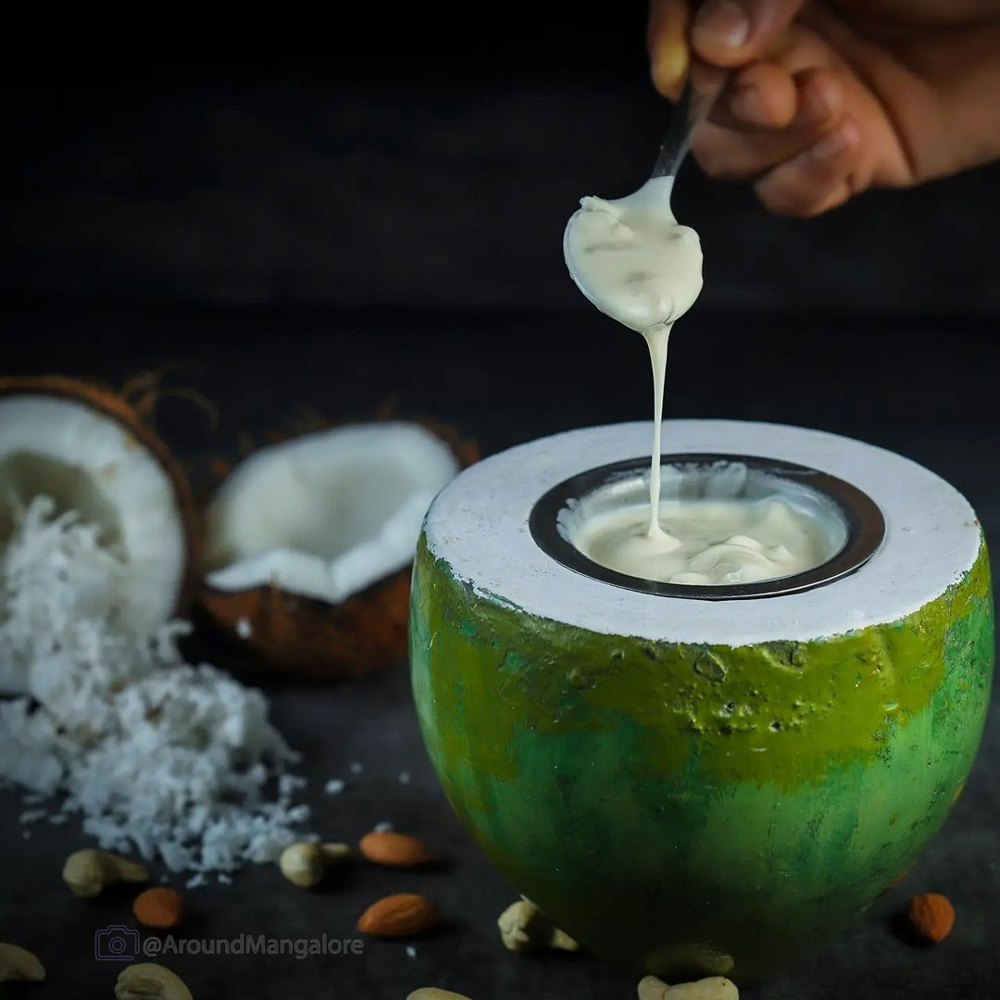

Payasam

Description
This is the culmination of refining all payasam recipes throughout generations.
The uniqueness of Elaneer Payasam is that it doesn't warrant chewing. When done well, it
has to melt in one's mouth.
Ingredients
- 3/4 cup Tender coconut pulp
- 1 cup Tender coconut water
- 1 cup milk
- 3 tablespoon condensed milk
- 1 cardamom powdered (optional)
- 4 cashew nuts
- 1/2 teaspoon ghee
Steps
- Boil milk and put the flame to medium or low and let it thicken for 5 minutes
- Cool the milk completely. Meanwhile, grind tender coconut pul, water coarsely or smoothly, which ever texture you prefer
- Save few bits for garnish.Golden fry cashew nuts in ghee
- Mix the ground pulp to the cooled milk
- Add condensed milk, cashew nuts along with cardamom powder and mix well. Serve chilled